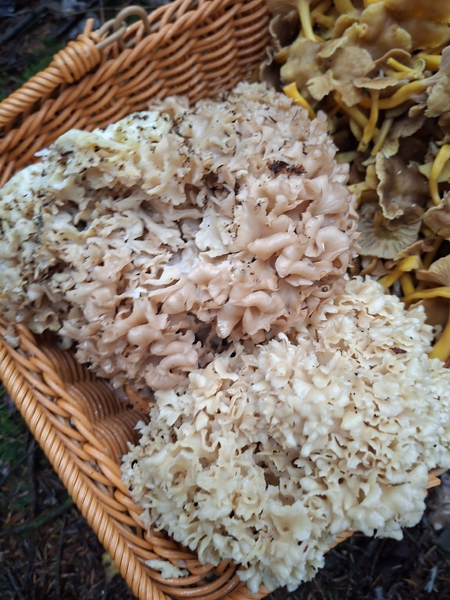
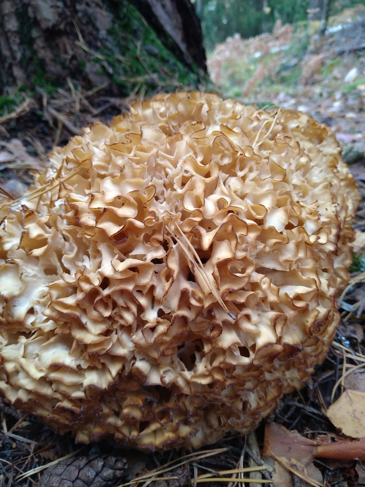

Szmaciak gałęzisty




Opis i występowanie
Szmaciak gałęzisty to jeden z najbardziej niezwykłych grzybów Europy Środkowej — wyglądem przypomina kalafiora, morską gąbkę lub koronkowy biały szal. Rośnie u podstawy sosen, świerków lub na ich pniakach, często w tym samym miejscu rok po roku. Spotykany w Polsce, Czechach i Słowacji, choć nie pospolity — to prawdziwy skarb lasu.
Owocnik składa się z licznych spłaszczonych, karbowanych listków wyrastających z jednej wspólnej podstawy. Kolor kremowy do jasnożółtego, u starszych okazów żółtobrązowy. Miąższ biały, chrupki, o delikatnym orzechowo-anyżkowym aromacie. Nie ma niebezpiecznych sobowtórów — żaden inny grzyb w naszym klimacie nie wygląda tak jak szmaciak.
Związek z drzewem
Szmaciak gałęzisty jest pasożytem korzeniowym i saprofitem. Jego grzybnia wnika w korzenie drzew iglastych i wywołuje brunatną zgniliznę korzeni. Zaatakowane drzewo stopniowo traci stabilność i może przewrócić się podczas wichury, nawet nie wyglądając na chore. Szmaciak pojawia się u podstawy, gdy drzewo jest już mocno zainfekowane — sam owocnik to tylko wierzchołek iceberg'a ogromnej grzybni.
| Drzewo-żywiciel | Częstość | Uwagi |
|---|---|---|
| Sosna zwyczajna (Pinus sylvestris) | ⭐⭐⭐⭐⭐ bardzo często | Zdecydowanie najczęstszy żywiciel; suche bory sosnowe, skraje lasów |
| Świerk pospolity (Picea abies) | ⭐⭐⭐ umiarkowanie | Tereny górskie i podgórskie; świerczyny i bory mieszane |
| Modrzew (Larix) | ⭐⭐ rzadziej | Plantacje modrzewiowe, parki; sporadyczne znaleziska |
| Jodła (Abies alba) | ⭐ rzadko | Lasy jodłowe w górach; nieliczne obserwacje |
Zbiór i czyszczenie
- Zbieraj gdy kolor jest kremowobiały do jasnożółtego — młody, świeży.
- Stary szmaciak (ciemnobrązowy, cuchnący) — zostaw lub zostaw do wysychania.
- Po zbiorze czyść bardzo dokładnie — w fałdach gromadzą się igły, ziemia, małe ślimaki.
- Sposób czyszczenia: rozłóż pojedyncze listki i płucz pod bieżącą wodą; wrzuć do miski z zimną wodą i sól — żywe owady wypłyną.
- Suszyć lub przerabiać w dniu zbioru.
Skład — wartości odżywcze
| Składnik | Wartość / efekt |
|---|---|
| Białko (~4 g/100g) | Dobry profil aminokwasowy |
| Beta-glukany (sparassan) | Badany jako czynnik immunostymulujący i przeciwnowotworowy |
| Witaminy B1, B2 | Metabolizm energetyczny, układ nerwowy |
| Potas, magnez | Praca serca i mięśni |
| Ergotioneina | Unikatowy antyoksydant |
| Kalorie: ~28 kcal/100g | Niskokaloryczny, o ciekawej teksturze |
Właściwości zdrowotne
Szmaciak jest grzybem zarówno kulinarnym jak i naukowo interesującym pod względem bioaktywnym — głównie dzięki unikalnemu polisacharydowi sparassanowi:
- Sparassan (β-1,3/β-1,6-glukan) — polisacharyd wyizolowany wyłącznie ze szmaciakowatych. W badaniach laboratoryjnych i na modelach zwierzęcych wykazuje: stymulację układu odpornościowego (wzrost aktywności NK i makrofagów), hamowanie wzrostu komórek nowotworowych jelita grubego i piersi in vitro. Badania kliniczne na ludziach wciąż ograniczone, ale wyniki eksperymentalne są obiecujące.
- Beta-glukany ogólne — immunostymulacja, wsparcie przy infekcjach, redukcja stanu zapalnego.
- Witaminy B1, B2 (tiamina, ryboflawina) — metabolizm energetyczny, praca układu nerwowego i wzrok.
- Potas, magnez — elektrolity wspierające pracę serca i mięśni, zapobiegające skurczom.
- Ergotioneina — antyoksydant grzybowy chroniący komórki przed stresem oksydacyjnym.
Zastosowania kulinarne
- Smażenie — z masłem i czosnkiem; chrupkie listki idealnie przyjmują aromaty.
- Tempura i panierka — doskonały jako tempura, po obtoczeniu w panierce zachowuje chrupkość.
- Zupy kremowe — delikatny anyżkowy aromat świetnie sprawdza się w kremach.
- Risotto i makaron — pokrojony w paseczki, smakuje jak szafran lasu.
- Suszenie — wysuszony łamie się na płatki, doskonały do zup i sosów zimą.
Przepisy
🧈 Szmaciak smażony z masłem, czosnkiem i rozmarynem
- Szmaciak rozdziel na mniejsze kępki, umyj i osusz na ściereczce.
- Na rozgrzanym maśle klarowanym smaż 5 min na dużym ogniu, nie mieszaj — niech zrumienią krawędzie.
- Dodaj zgnieciony czosnek i gałązkę rozmarynu, smaż 2 min.
- Sól, pieprz, skrop cytryną. Podawaj z chlebem lub jako dodatek do mięs.
🍤 Szmaciak w tempurze
- Szmaciak podziel na większe listki, osusz papierem.
- Ciasto tempura: 100 g mąki + 1 żółtko + 150 ml zimnej wody gazowanej, mieszaj lekko — mogą być grudki.
- Maczaj listki szmacиака w cieście, smaż w gorącym oleju (180°C) 2–3 min do złota.
- Odsącz na papierze. Podawaj z sosem sojowym z imbirem i wasabi.
🍝 Makaron ze szmaciakiem i parmezanem
- Szmaciak pokrój w paski. Szalotkę i czosnek zeszklij na oliwie z oliwek.
- Dodaj szmaciak, smaż 6 min na dużym ogniu. Wlej 80 ml białego wina, odparuj.
- Dodaj 100 ml śmietany i łyżkę masła. Gotuj 3 min do zagęszczenia.
- Wymieszaj z ugotowanym tagliatelle, posyp parmezanem i natką.
🍵 Zupa krem ze szmaciakiem
- Cebulę i czosnek zeszklij. Dodaj szmaciak w kawałkach, smaż 8 min.
- Wlej 900 ml bulionu warzywnego. Gotuj 20 min.
- Zmiksuj na krem. Dodaj 80 ml śmietany 30%.
- Dopraw solą, pieprzem, gałką muszkatołową. Podawaj z grzankami z rozmarynem.
✓ Zalety
- Brak jakichkolwiek niebezpiecznych sobowtórów
- Delikatny, elegancki smak — orzechowy z nutą anyżku
- Wyjątkowy wygląd — grzyb jak koronka
- Duże owocniki — jeden starcza na kilka posiłków
- Wraca co roku w to samo miejsce
- Beta-glukany o potencjalnym działaniu przeciwnowotworowym
✗ Wady i uwagi
- Trudny do znalezienia — rzadki, choć pospolity lokalnie
- Pracochłonne czyszczenie (fałdy zbierają zanieczyszczenia)
- Stare okazy mają nieprzyjemny zapach — nie zbieraj
- Szybko się psuje — przetwarzaj w ciągu 1–2 dni od zbioru
- Sezon krótki — sierpień–październik
Ciekawostki
- Szmaciak zawiera unikalny polisacharyd sparassan, który w badaniach laboratoryjnych wykazuje aktywność hamującą wzrost komórek nowotworowych.
- Jeden owocnik może ważyć do 10 kg i mierzyć 50 cm średnicy — to jeden z największych owocników grzybów w Polsce.
- Po wysuszeniu szmaciak zachowuje aromat przez długi czas — mielony proszek to luksusowa przyprawa do zup i risotto.
- W Japonii podobny gatunek Sparassis radicata jest od lat uprawiany i sprzedawany jako delikates zwany Hanabiratake (grzyb-kwiat).
- Szmaciak jest saprotrofem i pasożytem — żeruje na korzeniach sosen, powodując brunatną zgniliznę.